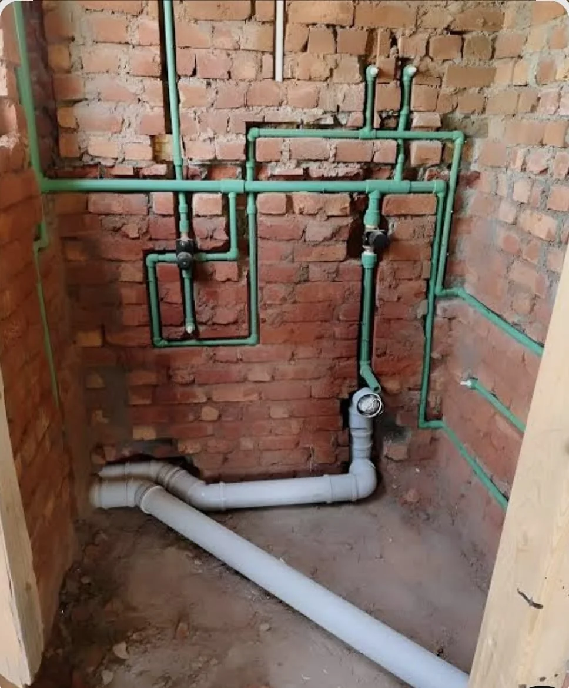
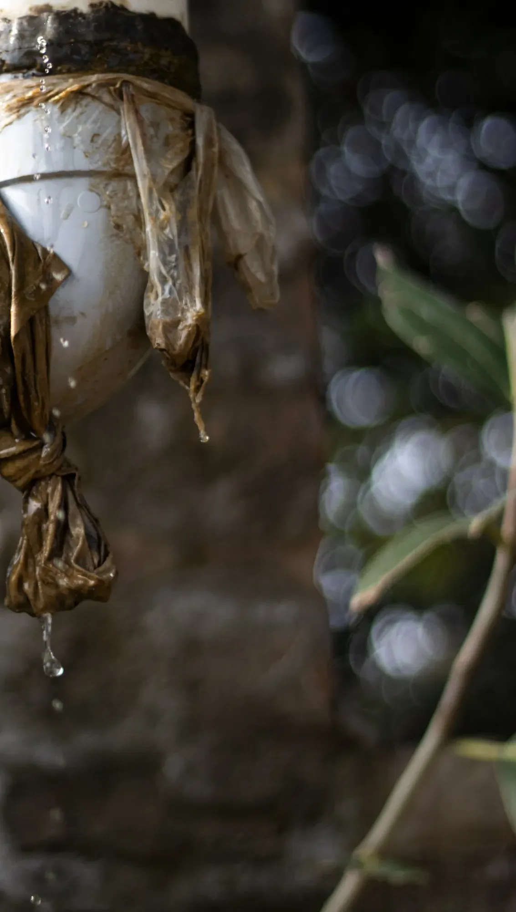
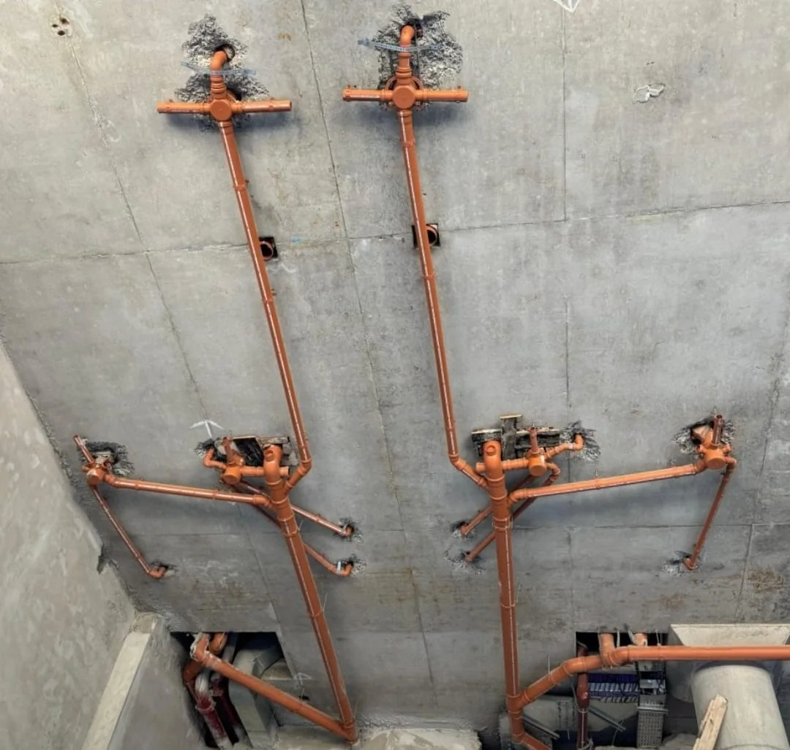
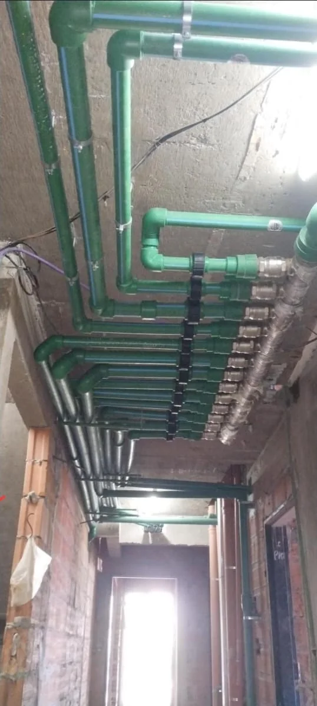
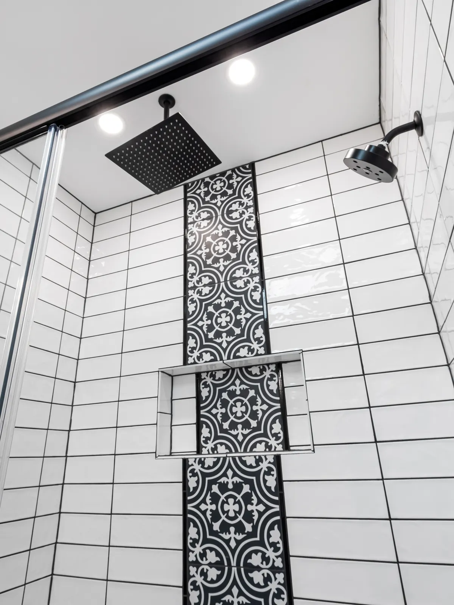
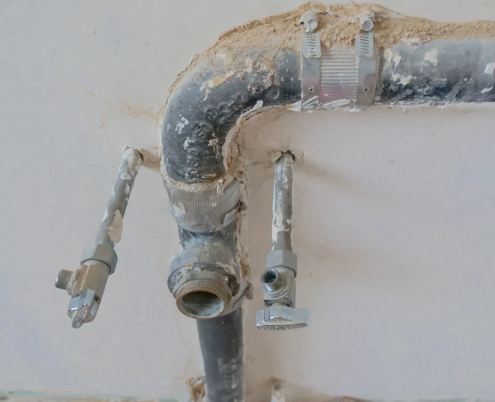
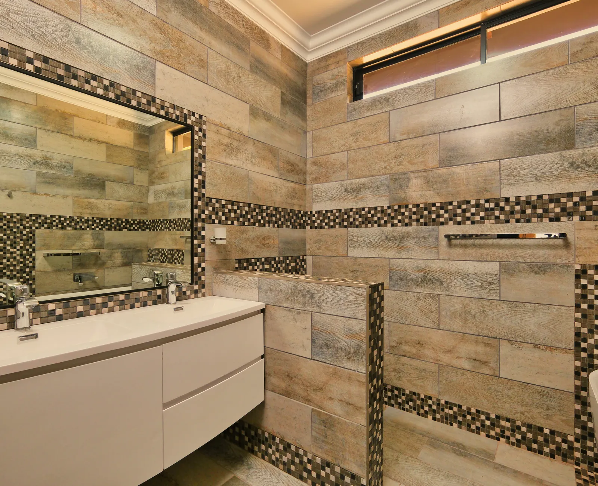
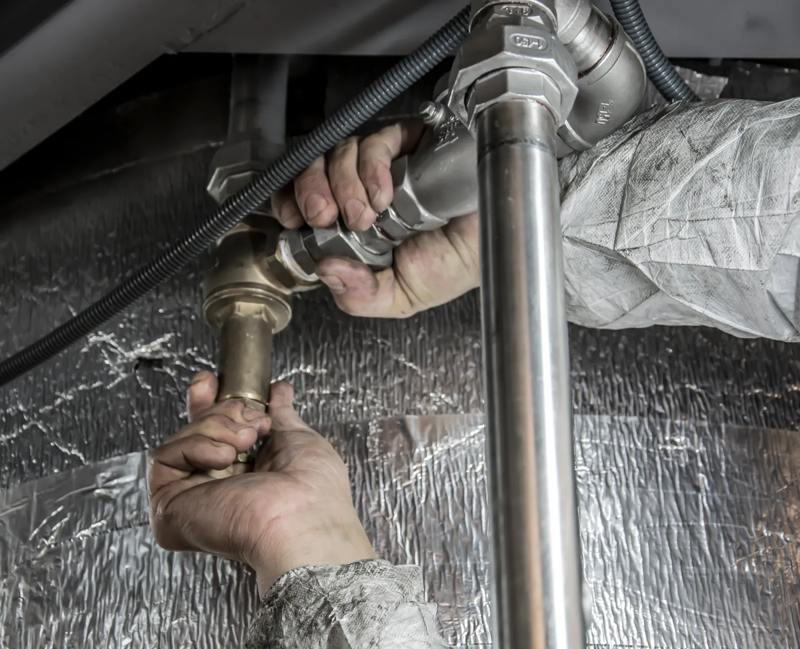

Agua, cloacas y desagües · CABA y GBA
Arreglo pérdidas, destapo cañerías y hago tu instalación de agua
Soy Enrique Zarneski, plomero sanitarista. Trabajo yo mismo en cada obra: vengo, veo qué pasa y te digo qué hay que hacer antes de romper nada.
- Termofusión para agua fría y caliente
- Prueba de presión antes de cerrar la pared

Obra real de Enrique01 Empecemos por acá
¿Qué te está pasando?
Tocá lo que más se parezca a tu problema y me llega el mensaje ya escrito. Si podés, sumale una foto: con eso ya me hago una idea de la visita.
- 01 Apareció una mancha de humedad y no sé de dónde sale
- 02 No baja el inodoro o rebalsa la rejilla
- 03 Sale un hilo de agua: perdí presión en toda la casa
- 04 Me quedé sin agua caliente
- 05 Arranco una obra y necesito toda la instalación sanitaria

La unión bien hecha aguanta años.
02 Lo que hago
Plomería y sanitaria, de la canilla que gotea a la obra completa
-
01
Consultar
Pérdidas y filtraciones
Busco de dónde sale el agua antes de romper. Abro lo mínimo, cambio el tramo dañado y dejo la pared lista para revocar.
-
02
Consultar
Destapaciones
Inodoros, piletas de cocina, rejillas y cañerías cloacales. Destapo y reviso por qué se tapó, para que no te vuelva a pasar el mes que viene.
-
03
Consultar
Instalación de agua fría y caliente
Termofusión, colector con llave de corte por ambiente y montantes. La instalación queda ordenada y con cada llave a mano.
-
04
Consultar
Cloacas y desagües
Desagües primarios y secundarios, pendientes, ventilaciones y cámaras. Lo que va bajo la losa se hace una sola vez: se hace bien.
-
05
Consultar
Termotanques y calefones
Instalación, recambio y reparación. Reviso también la conexión y las llaves, que es donde suele estar el problema real.
-
06
Consultar
Obra nueva y refacción
La instalación sanitaria completa de un baño, una cocina o una casa entera: agua, cloacas y artefactos, desde el plano hasta la prueba final.
03 Cómo trabajo
Lo que queda adentro de la pared
Una instalación sanitaria se ve dos días y después se tapa para siempre. Por eso todo lo que hago se prueba antes de cerrarla.



-
Paso 01
Primero el recorrido, después el martillo
Marco por dónde van los caños y abro solo lo necesario. Cuanto menos se rompe, menos hay que arreglar después, y eso también es plata tuya.
-
Paso 02
Agua en termofusión, cloaca con pendiente
Las uniones de agua se sueldan por termofusión: quedan de una sola pieza, sin roscas que aflojen. La cloaca se monta con la pendiente que corresponde para que no se junte nada.
-
Paso 03
Colector con llave por ambiente
Cuando la instalación lo permite, dejo un colector con una llave de corte para cada ambiente. Si mañana hay que tocar el baño, no te quedás sin agua en toda la casa.
-
Paso 04
Prueba de presión, y recién ahí se cierra
Dejo la instalación cargada con presión y la miramos juntos. Si no baja, se tapa. Lo que queda adentro de la pared no se toca nunca más: por eso se prueba antes.
04 Obras hechas
Trabajos terminados
-
Instalación de agua
Baño completo en termofusión
Alimentación de agua fría y caliente con llaves de corte, montada antes de revocar.
-
Colector
Distribución con llave por ambiente
Un corte independiente por local, ordenado sobre el pasillo para poder revisarlo sin romper.
-
Cloacas
Desagües de dos baños en losa
Primarios y secundarios resueltos con sus pendientes y ventilaciones, listos para tapar.
-

ReparaciónCambio de tramo con pérdida
Se abre lo justo, se reemplaza el tramo picado y se prueba antes de volver a cerrar.
-
Terminación
Ducha con lluvia y llave termostática
Alturas y salidas replanteadas antes del azulejo para que la grifería caiga donde tiene que caer.
-

TerminaciónVanitory con doble bacha
Alimentación y desagüe resueltos dentro del mueble, sin caños a la vista.

05 Quién va a ir
Voy yo, no mando a nadie
Soy Enrique. Trabajo solo o con un ayudante cuando la obra lo pide, así que el que te presupuesta es el mismo que hace el trabajo y el mismo que te atiende si algo falla después.
- Te digo qué hay que hacer antes de romper. Si conviene un arreglo chico en vez de cambiar todo, te lo digo.
- Dejo la obra limpia. El escombro que genero me lo llevo yo.
- Te mando fotos de lo que quedó tapado. Así tenés registro de por dónde pasa cada caño.
06 Lo que dicen
-
«Se me llovía la pared del lavadero y ya habían venido dos personas. Enrique encontró la pérdida el mismo día y abrió apenas medio metro de pared.»
-
«Nos hizo toda la instalación de agua del PH: colector, llaves de corte por ambiente y la prueba de presión antes de cerrar. Un año después, ni un problema.»
-
«Se tapó la cloaca con la casa llena de gente. Contestó el WhatsApp al toque, me dijo a qué hora podía y cumplió.»
07 Dónde trabajo
Ciudad de Buenos Aires y Gran Buenos Aires
Me muevo por Capital y el conurbano. Si estás justo en el borde de la zona, escribime igual y te digo si llego.
11 3404-596808 Antes de escribirme
Preguntas que me hacen siempre
¿Cómo pido un presupuesto?
Escribime por WhatsApp y contame qué te pasa. Si podés mandarme una foto del problema, mejor: con eso ya me hago una idea de qué materiales llevar y coordinamos el día de la visita.
¿Hacés obra nueva o solamente arreglos?
Las dos cosas. Voy desde una canilla que gotea o una destapación hasta la instalación sanitaria completa de un baño, una cocina o una casa entera.
¿Hay que romper mucho para encontrar una pérdida?
Primero busco el recorrido de la cañería y recién ahí abro, siempre lo mínimo posible. La idea es que después tengas que arreglar y pintar lo menos que se pueda.
¿Qué usás para la instalación de agua?
Termofusión para agua fría y caliente: las uniones quedan soldadas de una pieza, sin roscas que se aflojen con el tiempo. Cuando la instalación lo permite dejo un colector con llave de corte por ambiente.
¿Atendés urgencias?
Escribime contándome qué pasó y te contesto en el momento si puedo ir ese mismo día o cuándo tengo lugar. Prefiero decirte la verdad antes que hacerte esperar.
¿En qué zona trabajás?
Ciudad de Buenos Aires y Gran Buenos Aires. Si estás en el límite de la zona, consultame igual antes de descartarlo.
Sin vueltas
Contame qué te pasa y te digo qué hay que hacer
Un mensaje, una foto y coordinamos. Después vemos si es un arreglo de una hora o una obra de dos semanas.
Escribirle a Enrique